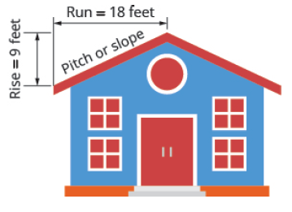

Chapter 4: Graphs
Section 4.4: Understand Slope of a Line
Learning Objective(s)
- Find the slope of a line from its graph.
- Find the slope of horizontal and vertical lines.
- Use the slope formula to find the slope of a line between two points.
- Graph a line given a point and the slope.
- Solve slope applications.
The Slope-Intercept Method
Before we get into examples, let's talk about the slope-intercept method for graphing linear equations. In the previous sections, we revisited graphing by using an \(x\)/\(y\) table. With that method, you substitute values in for \(x\) to find values of \(y\) to plot the ordered pair \((x, y)\). That method can entail a lot of work. While you can always use that method, we will now venture into the slope-intercept method.
An equation in the form \(y = mx + b\) is an equation in slope-intercept form. The variable \(m\) represents the slope, or "rate of change", and the variable \(b\) represents the y-intercept, which is the point \((0, b)\).
Slope-Intercept Form
An equation of the form \(y = mx + b\) is written in slope-intercept form, where:
- \(m\) = the slope (rate of change) = \(\dfrac{\text{rise}}{\text{run}}\)
- \(b\) = the y-intercept, giving the point \((0, b)\)
Note: Any whole number slope can be written as a fraction over 1. For example, \(m = 2 = \dfrac{2}{1}\).
How To: Graph Using the Slope-Intercept Method
- Place the equation in the form \(y = mx + b\) by solving for \(y\).
- Identify the slope \(m = \dfrac{\text{rise}}{\text{run}}\).
- Identify the y-intercept \((0, b)\).
- Plot the point \((0, b)\).
- From that point, rise (or fall if negative) the number of spaces in the numerator of the slope, then run the number of spaces in the denominator, and place a point at the final location.
- Connect the two points with a line. Repeat step 5 as needed to plot more points.
Example 1
Graph the equation \(-2x + y = 4\) using the slope-intercept method.
Solution
First, solve the equation for \(y\).
\[\begin{align*} -2x + y &= 4 \\ y &= 2x + 4 \end{align*}\]Next, identify the slope and y-intercept:
- Slope: \(m = 2 = \dfrac{2}{1}\) — rise 2 units, run 1 unit.
- y-intercept: \((0, 4)\)
Plot the y-intercept at \((0, 4)\), then use the slope to find a second point by rising 2 and running 1. Connect the points to draw the line.
Self Check 1
Graph the equation \(3x + y = -2\) using the slope-intercept method. Identify the slope and y-intercept first.
First solve for \(y\): \(y = -3x - 2\).
- Slope: \(m = -3 = \dfrac{-3}{1}\) — fall 3 units, run 1 unit.
- y-intercept: \((0, -2)\)
Plot \((0, -2)\), then move down 3 and right 1 to place the second point at \((1, -5)\). Draw the line through both points.
Understand Slope
As we've been graphing linear equations, we've seen that some lines slant up as they go from left to right and some lines slant down. Some lines are very steep and some lines are flatter. What determines whether a line slants up or down, and how steep it is?
The steepness of the slant of a line is called the slope of the line. The concept of slope has many applications in the real world — the pitch of a roof, the grade of a highway, and the slope of a wheelchair ramp are just a few examples. When you ride a bicycle, you feel the slope as you pump uphill or coast downhill.
To find the slope of a line on a graph, we measure the vertical change and the horizontal change between any two points on the line. The vertical change is called the rise and the horizontal change is called the run.
Slope of a Line
The slope of a line is:
\[m = \frac{\text{rise}}{\text{run}}\]The rise measures the vertical change; the run measures the horizontal change. Reading from left to right, a line that goes upward has a positive slope and a line that goes downward has a negative slope.
To find slope from a graph, locate any two points on the line whose coordinates are integers. Starting with the point on the left, sketch a right triangle with the hypotenuse going from the first point to the second point. Count the rise on the vertical leg (negative if you go down) and the run on the horizontal leg, then take the ratio.
How To: Find the Slope of a Line from its Graph
- Locate two points on the line whose coordinates are integers.
- Starting with the point on the left, sketch a right triangle with the hypotenuse going from the first point to the second point.
- Count the rise on the vertical leg of the triangle. The rise is negative if you go down.
- Count the run on the horizontal leg.
- Use the slope formula: \(m = \dfrac{\text{rise}}{\text{run}}\).
Slope of Horizontal and Vertical Lines
What is the slope of a horizontal line such as \(y = 4\)? If we pick two points on the line, say \((0, 4)\) and \((3, 4)\), the rise is \(0\) and the run is \(3\), giving us \(m = \frac{0}{3} = 0\). All horizontal lines have a slope of zero — the line is perfectly flat, so there is no vertical change at all.
What about a vertical line such as \(x = 3\)? Using the points \((3, 0)\) and \((3, 2)\), the rise is \(2\) and the run is \(0\). But we cannot divide by zero, so the slope of a vertical line is undefined.
Slopes of Horizontal and Vertical Lines
- The slope of a horizontal line \(y = b\) is \(0\).
- The slope of a vertical line \(x = a\) is undefined.
Quick Guide to Slopes of Lines
| Line Direction | Slope | Example |
|---|---|---|
| Rises left to right | Positive (\(m > 0\)) | \(m = \frac{2}{3}\) |
| Falls left to right | Negative (\(m < 0\)) | \(m = -\frac{1}{4}\) |
| Horizontal | Zero (\(m = 0\)) | \(y = 5\) |
| Vertical | Undefined | \(x = 2\) |
Example 2
Find the slope of each line.
- \(x = 8\)
- \(y = -5\)
Solution
- \(x = 8\) is a vertical line. Its slope is undefined.
- \(y = -5\) is a horizontal line. Its slope is \(m = 0\).
Self Check 2
Find the slope of each line.
- \(x = -4\)
- \(y = 7\)
- \(x = -4\) is a vertical line. Its slope is undefined.
- \(y = 7\) is a horizontal line. Its slope is \(m = 0\).
Use the Slope Formula to Find the Slope Between Two Points
Sometimes we need to find the slope of a line between two points and we don't have a graph to count out the rise and the run. We can use the slope formula instead.
If we label the first point \((x_1, y_1)\) and the second point \((x_2, y_2)\), then the rise is the difference in the \(y\)-coordinates and the run is the difference in the \(x\)-coordinates.
Slope Formula
The slope of a line through two points \((x_1, y_1)\) and \((x_2, y_2)\) is:
\[m = \frac{y_2 - y_1}{x_2 - x_1}, \quad x_1 \neq x_2\]Example 3
Use the slope formula to find the slope of the line between the points \((1, 2)\) and \((4, 5)\).
Solution
| Label the points. | \((x_1, y_1) = (1, 2)\) and \((x_2, y_2) = (4, 5)\) |
| Write the slope formula. | \(m = \dfrac{y_2 - y_1}{x_2 - x_1}\) |
| Substitute the values. | \(m = \dfrac{5 - 2}{4 - 1}\) |
| Simplify. | \(m = \dfrac{3}{3} = 1\) |
The slope of the line is \(m = 1\). Since the slope is positive, the line rises from left to right.
Example 4
Use the slope formula to find the slope of the line between the points \((-2, 3)\) and \((4, -3)\).
Solution
| Label the points. | \((x_1, y_1) = (-2, 3)\) and \((x_2, y_2) = (4, -3)\) |
| Write the slope formula. | \(m = \dfrac{y_2 - y_1}{x_2 - x_1}\) |
| Substitute the values. | \(m = \dfrac{-3 - 3}{4 - (-2)}\) |
| Simplify the numerator and denominator. | \(m = \dfrac{-6}{6}\) |
| Simplify. | \(m = -1\) |
The slope of the line is \(m = -1\). Since the slope is negative, the line falls from left to right.
Self Check 3
Use the slope formula to find the slope of the line between \((3, -4)\) and \((2, -3)\).
The slope is \(m = -1\).
Solve Slope Applications
Slope has many real-world applications. Whenever something rises or falls at a constant rate — a roof, a road, a ramp — the slope describes that rate of change. In these problems, slope is often described as a ratio, a grade (percentage), or a pitch.
Example 5
The pitch of a roof is described by its slope. A contractor is building a house and the roof has a pitch where it rises 10 feet vertically for every 15 feet of horizontal run. Find the slope of the roof and interpret what it means.

Solution
| Identify the rise and the run. | Rise \(= 10\) ft, Run \(= 15\) ft |
| Write the slope formula. | \(m = \dfrac{\text{rise}}{\text{run}}\) |
| Substitute the values. | \(m = \dfrac{10}{15}\) |
| Simplify. | \(m = \dfrac{2}{3}\) |
The slope of the roof is \(\dfrac{2}{3}\). This means for every 3 feet of horizontal distance, the roof rises 2 feet vertically.
Self Check 4
A wheelchair ramp rises 1 foot for every 12 feet of horizontal run. Find the slope of the ramp and explain what it means.
The slope is \(\dfrac{1}{12}\). This means the ramp rises 1 foot for every 12 feet of horizontal distance — a gentle incline that meets accessibility standards.
Exercises
Find the Slope of Horizontal and Vertical Lines
In the following exercises, find the slope of each line.
Use the Slope Formula Between Two Points
In the following exercises, use the slope formula to find the slope of the line between each pair of points.
Slope Applications
- A road has a rise of 3 feet for every 50 feet of horizontal run. Find the slope of the road and explain what it means.
- A hiking trail rises 8 feet for every 100 feet of horizontal distance. Find the slope of the trail.
- A roof rises 6 feet over a horizontal distance of 18 feet. Find the pitch (slope) of the roof.
- A ramp for loading trucks rises 2 feet over a horizontal run of 9 feet. Find the slope of the ramp.
Writing Exercises
- In your own words, explain the difference between a line with a slope of \(0\) and a line with an undefined slope.
- Explain why the slope of a vertical line is undefined.